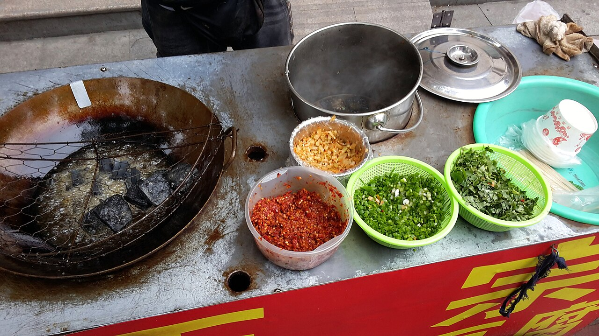

长沙臭豆腐Changsha Stinky Tofu · 湘菜
长沙人叫它"臭干子":白豆腐经冬笋、香菇、豆豉等熬制的卤水浸泡发酵, 入热油现炸,外皮焦脆、内里嫩滑,"闻起来臭,吃起来香"—— 毛泽东当年为火宫殿题词赞过,是长沙街头最具人气的名小吃。
去哪儿吃?
长沙·火宫殿(坡子街总店)湘菜小吃 · 人均 ¥80
湖南省长沙市天心区坡子街127号
点评:臭豆腐的"正源"之一,外脆里嫩、卤香透芯,配剁椒萝卜干一绝。
长沙·黑色经典臭豆腐(太平街店)小吃 · 人均 ¥20
湖南省长沙市天心区太平街(近五一大道口)
点评:现炸现灌汤汁,豆腐戳洞吸入蒜汁辣酱,街边排队的长沙味道。
怎么做?
- 臭豆腐生坯(卤水浸好的半成品)
- 蒜汁、辣椒酱
- 剁椒萝卜干
- 香菜、葱花
- 食用油(炸制)
- 臭豆腐生坯沥干表面水分(卤水越陈,风味越足)。
- 油烧至六成热,下豆腐中火炸 3~4 分钟,至外皮鼓起金黄酥脆。
- 捞出沥油,趁热用筷子在每块豆腐上戳一个小洞。
- 将蒜汁与辣酱从洞口灌入豆腐芯。
- 撒剁椒萝卜干、香菜葱花,现炸现吃。
小贴士:油温与时间决定"外焦里嫩";戳洞灌汁是长沙吃法的灵魂, 汤汁要现调,辣香才够冲。